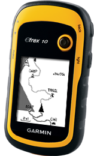
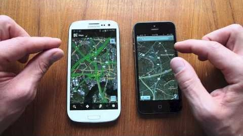
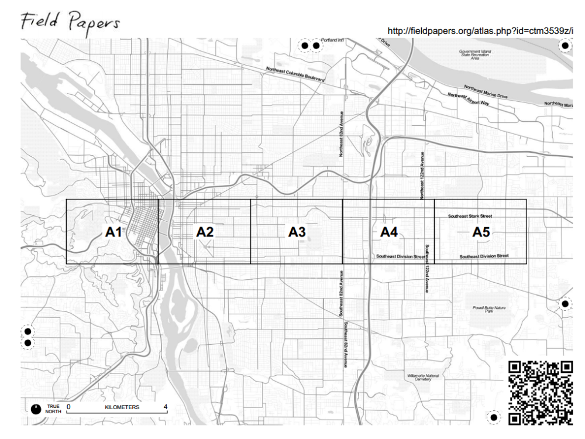
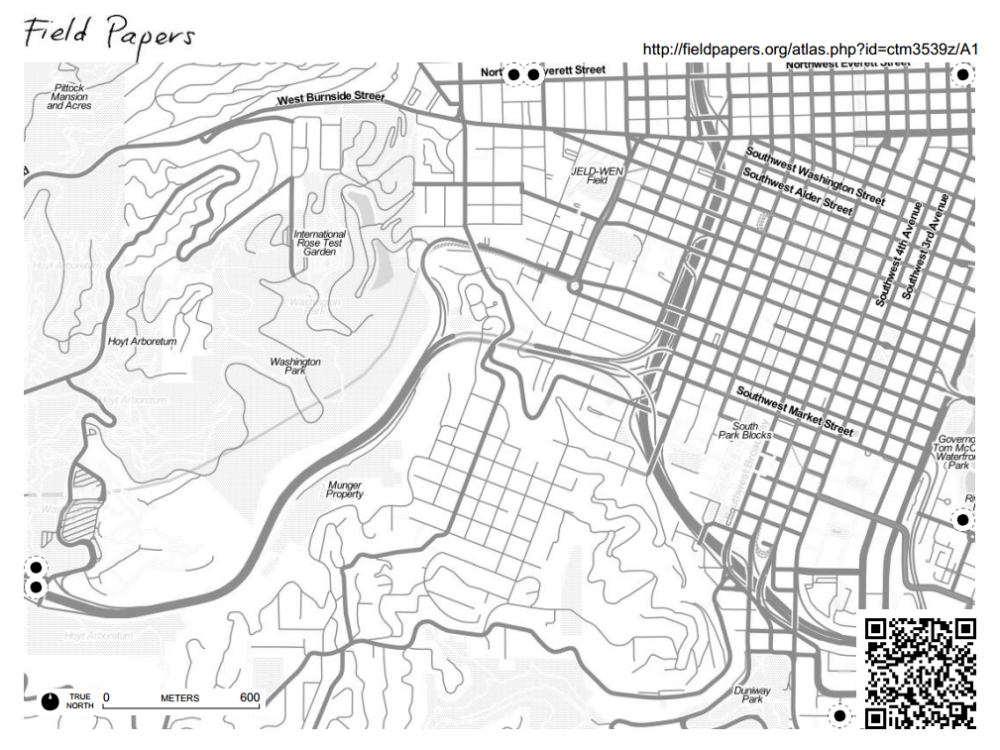

Guide to GIS Fieldwork
A Primer on Managing Spatial Data Collection in the Field
Download a PDF Version of this Guide
The GIS office at American Red Cross is deeply involved in international disaster response and disaster preparedness programs throughout the world. Accurate and quality surveys to establish baseline and monitoring data allows Red Cross chapters around the world it better implement programs.
This guide provides a broad overview of some the underlying concepts behind GIS fieldwork. It also provides advice and a basic framework for carrying out a mapping and data collection project. More information and resources can be found at http://americanredcross.github.io.
Technology Used
Note of Caution: All electronic devices are expensive and must be monitored to avoid possible thievery. Smartphones in particular are status items in much of the developing world and will be a target for thieves or opportunistic volunteers.

Garmin GPS
- A Garmin GPS unit is your standard, day-to-day GPS device. It is durable, it has a long battery life, and it records accurate information. Garmin units can record lines, take points, and route you to destinations.
- The major flaw of a Garmin is the unclear interface which requires extensive training for accurate data collection. Text data entry is very time consuming and error prone on Garmin units. For this reason we recommend using a complementary data collection spreadsheet printout when using Garmin units.
- If you don’t have a smartphone, then a Garmin will be your go-to GPS. Otherwise, a Garmin will be used for heavy duty mapping in rough circumstances where you are liable to damage a smartphone.
GPS Data Logger
- A data logger has the same functionality as a Garmin, but with a much more basic interface. Data loggers automatically record lines of your movements and collect points of interest (POIs) at the push of a button. Data loggers can also connect to other devices via Bluetooth.
- Data loggers are great for simplifying GPS work or augmenting the GPS of another device. We mostly use them to connect to smartphones.
Smartphone (+ Data Logger)
- Smartphones have great interfaces but inaccurate built-in GPS units. When paired with a high-precision external GPS unit (also known as a data logger) they work great as an intuitive platform for GPS data collection. Smartphones have a higher learning curve at first, but are much easier to use in the long run, meaning you can pair your GPS work with surveying, photography, or other essential digital fieldwork.
- Smartphones paired with GPS data loggers make great everyday GPS units. They’re especially useful in situations where you want to collect a lot of attribute information or heavily structure your data collection.
- Smartphones consume battery power quickly, so spare batteries will be necessary. Pack at least 2 batteries per phone.
- Smartphones can be delicate, so avoid using them in particularly rough environments where they might be damaged or destroyed.
Field Papers
 - Field Papers are a tool, not a device.
- The Field Papers website (http://fieldpapers.org/) lets you divide an Open Street Map (OSM) extent of your choosing into a grid. The site then delivers an “atlas” as a PDF to print with a master cover page and a page for each grid section. Every page comes with personalized instructions/notes of your choosing at the bottom and plenty of room for annotation. This method makes it easier to gather data to add to base maps (Open Street Map) by allowing you to reference existing digital data while in the field.
- Field Papers are well suited to quick, low-tech data collection exercises in places where a significant amount has already been mapped and uploaded to OSM. They make it easy to record attributes or additional items for the map with nothing more than a paper and pen.
- Field Papers are not suited for areas where the existing OSM data is too poor for the volunteer to orient him / herself and accurately record the locations of additional places of interest on the map.
- Field Papers can be used to collect information not suited for open distribution via Open Street Map (OSM), but only if care is taken to note that this data is for internal usage only.
- Field Papers should only be used when support from staff trained in contributing to OSM is available. These staff may be: NHQ GIS team on the ground; NHQ GIS team working remotely; delegates or National Society staff trained on contributing to OSM; OSM trained volunteers (perhaps directly recruited from the local OSM community).
First Mile Geo
- Like Field Papers, First Mile Geo is a tool, not a device. It allows users to collect spatial data on paper and later digitize it through a web browser, all without knowing a thing about GIS. First Mile Geo is best suited for primary data (information which is collected first-hand for a specific purpose), but it can also be used for base data.
- The First Mile Geo website (https://www.firstmilegeo.com.com/) lets you choose any location in the world and turn the OSM data for that location into a multi-page paper atlas to print for use in the field. You also build and print worksheets with structured information fields to gather data alongside your maps.
- The website provides a user-friendly interface for digitizing, storing, sharing, and visualizing your data.
- First Mile Geo is well suited for situations in which access to electronic equipment is limited and makes it easy for volunteers without technical skills to assist. It facilitates data export and lets you easily send data to project staff, GIS specialists, and project partners.
- First Mile Geo is not suited for areas where the existing OSM data is too poor for the volunteer to orient him / herself and accurately record locations on the map.
Example Use Scenarios
| Example Scenario | Garmin/ Smartphone | Field Papers | Caerus Geo |
|---|---|---|---|
| You want to map a few residential roads that are missing from Open Street Map. | |||
| You want to map evacuation routes and shelters. | |||
| You want to record the locations of volunteers. | |||
| You want to record community boundaries. | |||
| No data currently exists for a community and you want to map all roads. |
Types of Data
Geographic data is recorded as one of three types.
Points
- Points represent a specific spot on the earth. The spot is described by a latitude coordinate and a longitude coordinate. A point is often a simple way to represent a larger area, like a community or village.
- Points can be collected using the waypoint or point functions on any electronic GPS device.
Lines
- Lines represent a path and are described by a series of points along the path. Lines are often used to represent routes or to outline areas. A more detailed line will have a greater number of points describing it.
- Lines can be collected by turning on the tracking features of any electronic GPS device.
Polygons
- Polygons are enclosed, self-contained areas. They represent the outline of an enclosed area, such as a building footprint or an administrative boundary. Polygons are hard to collect using GPS.
- Polygons can be collected a number of ways.
- The best method is to collect a line while tightly walking or driving around the outline of the area in question 3 times. Take a point at the end to label the area. The recorded lines can be transformed into a polygon digitally at a later time.
- An area may be large or the terrain difficult; you may be unable to travel the outline. Under such circumstances you can take a representative point. All representative points should be taken at the same reference location (for example: the center of villages, the southwest corner of buildings, etc.).
Methodology and Logistics
General
- Assign a survey field work manager.
- Every data collector should have a GPS unit. Pairs are slower!
- In rural areas, every data collector should have access to motorized transport if at all possible. Transportation greatly increases the efficiency of the process.
- Only use Field Papers in areas where the base map is reasonably complete so data collectors can orient themselves using the printed pages.
- Write down technical steps (for example, how to turn on devices, how to record points with devices, etc.) for reference.
- Write methodologies (for example, for lines walk down center of streets, for points stand at the southeast corners of buildings, etc.) down for reference.
- Make a daily list of data collectors and which device(s) they have.
- If possible, show data collectors the results of their work at the end of the day or the beginning of the next day, and review / correct any errors.
- This illustrates the importance of data quality and gets volunteers excited about the work.
- Keep many extra copies of manuals and data collection sheets, they will inevitably be dirtied and destroyed.
Time Management and Coverage
- Subdivide the assessment area (if using Field Papers or First Mile Geo, use the atlas pages as the divisions) into different geographic sections and assign a surveyor to each.
- Have a target coverage area for each day and an overall work plan to assess the entire area.
- Beginning of the day: Gather volunteers every day, assign them a new area, give them devices, and place them on transit. If necessary do a technical refresher.
- End of day: Gather volunteer’s devices, check the quality of the data, and show them the results of their work. Identify mistakes and errors, and then explain to the volunteers how to avoid the problems in the future.
Data organization
- A list of points of interest (POIs) specifying what type of data you want (point, line or polygon)
- A standard location for taking points relative to each type of POIs. Examples:
- To the south in the doorway of homes
- In the center of the fields for flood zones
- In the center of schoolyards for schools
- A standard set of attributes (additional information) to be collected for each feature collected. For example:
- Bridge construction materials (wood or steel)
- Disaster resilient (for example, buildings which have been raised to protect from flooding or buildings reinforced to protect from earthquakes)
- Services offered at the clinic
- Road name, road type
- School name and type (Primary school, secondary school), church name and type (Catholic, Evangelical)
- Meeting place type (under a tree, in a schoolyard, village leader’s house)
- A standard nomenclature for POIs
- For example: XYZ Primary School vs. Primary School of XYZ
- Optional: An acceptable precision for each POI
- For example: Must be 3 meters or less accuracy to take a household point
- Important for some urban work, not so much for rural / peri-urban
- See end of guide for sample reference sheet and sample data collection sheet
For Field Papers:
- Specify whether to write on the sheet or on a separate piece of paper
- Specify whether to number and what system to use
- Modify data collection sheet above for field papers
- For example, make sure attribute tags are appropriate for Open Street Map
- Two volunteers per field paper set is OK
- One to navigate and call out information, the other to write
Start-to-Finish, Step-by-Step
Planning
- Do I have a solid plan how these maps will be used? Can I explain it easily to others and to data collection volunteers?
Setup
- Brainstorm and identify the map(s) you want to see
- What’s the purpose of the map(s)?
- Important POIs
- What format they take
- What information you need about them
- Familiarize oneself with GPS devices (if not already familiar)
- Read NHQ manuals
- Use GPS in question a few times to familiarize / troubleshoot
- Gather resources
- Identify necessary number of volunteer
- Procure appropriate GPS devices / field papers
- Arrange transport or make transport plan
- Procure supplies (food etc. for volunteers)
- Technical guides and training manuals / trainers from NHQ (if you don’t already have)
- Create data collection overview sheet
- POIs
- Naming
- Data type
- Attributes
- Create training data collection sheet (or use existing one)
Training
- Introduce devices
- Train on device functions (1-2 hours)
- Train on recording of attributes into devices
- Introduce project
- Explain the intent of the mapping exercise to volunteers
- Prepare them to give a simple explanation to any government officials or law enforcement who might question them regarding their activities
- Sometimes GPS devices make people nervous, so it is best to be prepared
- Training exercise (should be 1-2 hours, 4 hours MAXIMUM)
- Send out field teams to small, previously delineated area for mock data collection effort
- Review of training
- Load in data
- Crudely map (in Google Earth, etc.) and identify collection errors
Pre-Collection Checklist
Training
- Are my data collectors able to take points, lines and polygons and name them?
- Are my data collectors well informed on the places they will go? The data they need to collect?
- Are my data collectors 100% comfortable with using the devices and collecting the data I need?
- Are my data collectors prepared to explain themselves to any officials who ask what they’re doing?
Logistics
- Have I got enough equipment (devices, extra batteries, etc.)?
- Is equipment ready (batteries charged, etc.) and labeled?
- Do I have backup devices? A contingency plan?
- Do I have clear assignments ready for all my data collectors?
- Have I arranged transport for my data collectors?
- Do my data collectors know where they’re going today?
- Do I have data summary sheets for all my data collectors?
Collection
- Beginning of the day (1 hour maximum)
- Gather volunteers
- Assign them a new area + give them any available maps for orientation
- Give them devices / field papers / First Mile Geo documents
- If necessary do a 15 minute technical refresher
- Provide transport
- End of day (30 minutes - 1 hour)
- Gather devices from volunteers
- Check the quality of the data
- Identify mistakes or errors and explain how to avoid the mistakes in the future
- Show volunteers the results of their work
Post-Collection Checklist
- Are my daily targets realistic? Do I need to adjust my work plan to accommodate a faster or slower rate of data collection than anticipated?
- Have I checked the quality of the data? Is the correct information being collected?
Sample Reference Sheet
| POI | Data Type | Name Format Example | Notes Regarding Collection | Attribute 1 | Attribute 2 | Attribute 3 | Attribute 4 |
|---|---|---|---|---|---|---|---|
| School | Polygon | [NAME] Primary School (St. John's Primary School) | record track while walking around 3 times, or record point in center of schoolyard | school level | # of male students | # of female students | # of teachers |
| Clinic | Polygon | [NAME] [Clinic Type] (Butaleja General Health Clinic Level II) | record track while walking around 3 times, or record point at SE corner of building | days of week open | # of health care providers | Type of clinic | |
| Church | Polygon | [NAME] [Type of Church] (Nuestra Senora de las Montanas Cathedral) | record track while walking around 3 times, or record point at SE corner of building | religion | capacity (# of people) | building type (wood, brick, stone, etc.) | |
| Well | Point | [NAME] [Type of well] [#] (Butaleja Borehole II) | record point | type (hand, electric, etc.) | Working? | ||
| Telephone pole | Point | Pole [#] | record point | construction (wood, metal, etc.) | Working? | ||
| Recreation field | Polygon | [Type] field (Futbol field) | record track while walking around 3 times | type (basketball, football, etc.) | |||
| Evacuation route | Line | [Type] evacuation route [#] (Coastal evacuation route 3) | record track while travelling path (travel the center if possible) | # of lanes | surface (paved, gravel, dirt, etc.) |